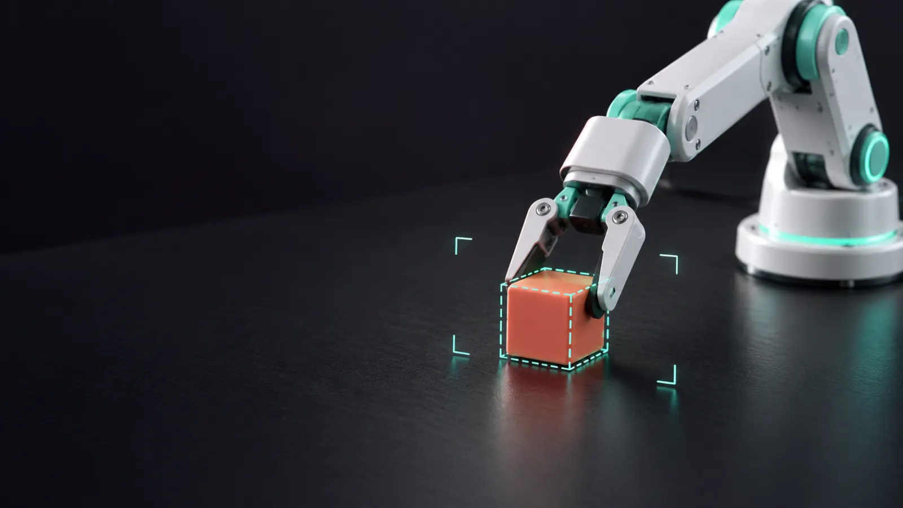
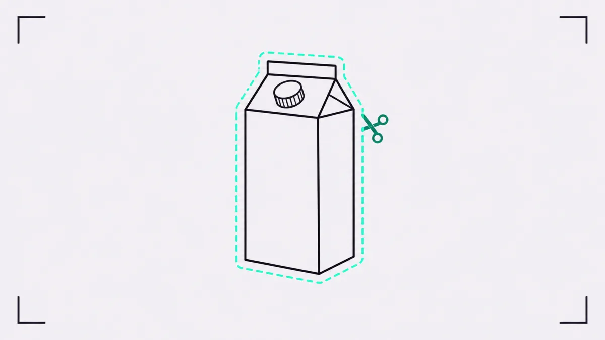
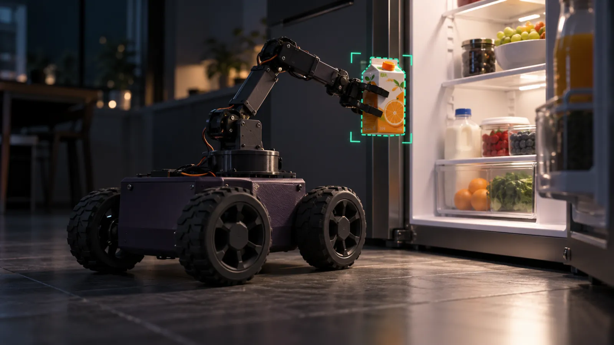
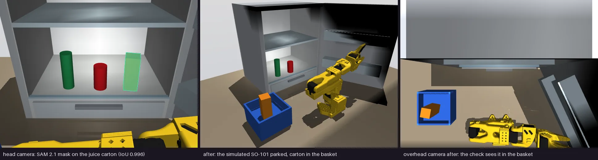
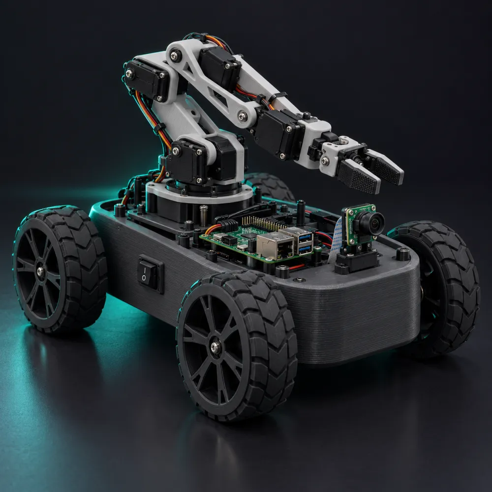

SAM cuts it out. The arm picks it up.
Segment Anything finds each object in the overhead frame; depth makes it a grasp for a simulated SO-101 arm.
Target · red cube
- centre x
- 203.6 mm
- centre y
- −40.2 mm
- vs truth
- 0.14 mm

Click the thing. The jaws close on the cut.
Three cuts from a frame to a closed gripper

- 01
Cut it out
SAM 2.1 segments each object from one point prompt.
- 02
Locate it
Metric depth turns the mask into a 3D grasp target.
- 03
Pick it up
The arm grips, checks its grip, and retries a miss.
Scored against the simulator’s truth
Clean tasks on fixed seeds, the arm’s own checks in every sweep, and the hero target’s error, all scored by MuJoCo’s state.
Next: bring me the juice from the fridge
The same cut on a robot that drives. Hasami is the brain of the Thenar Walker, a printed four-wheel rover with a six-joint arm and a Raspberry Pi. The fetch runs end to end in simulation today; on the real rover it waits for a camera.



- BasePrinted PETG tub, four 370 gear motors, MDD10A driver
- ArmSix MG996R servos on a PCA9685, SO-ARM100 family
- RuntimeThe Pi runs the phone page, the safety rules and a channel for Hasami. The phone always outranks it.Tested over sockets, not on hardware
- Find
hasami_walker lookcuts the item out of a robot frame with SAM.Tested with real SAM 2.1 - ReachMoving the arm to the item needs the camera mounted and calibrated to the arm.Not built yet
What runs today
Live
SAM 2.1 and the MuJoCo arm on the hosted dashboard.
Setup required
Muse planning and SAM 3.1 need MODEL_API_KEY; the real SO-101 arm needs HASAMI_SO101_PORT.